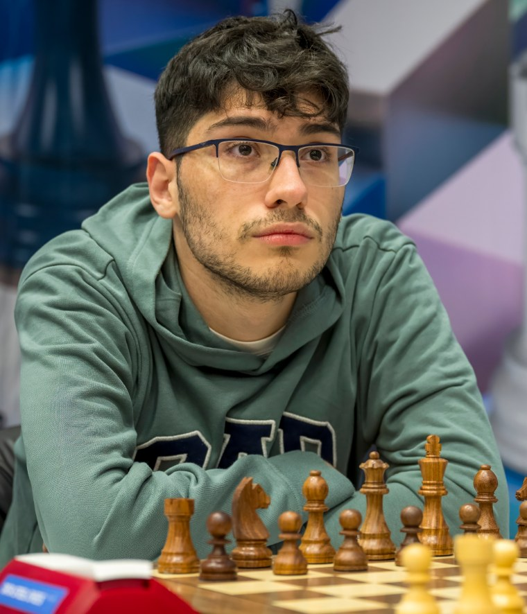

Au sommaire
L'été 2026 : la renaissance d'un prodige
Reprenons les faits, parce qu'ils sont spectaculaires. En juillet 2026, au Chennai Grand Masters — le tournoi le plus relevé d'Inde —, Firouzja bat Pranesh puis le champion du monde Gukesh en personne dans les deux premières rondes, puis contrôle tranquillement la fin du tournoi pour s'imposer invaincu. Battre le champion du monde chez lui, devant son public, à trois mois de son match de championnat du monde contre Sindarov : difficile de faire plus symbolique.
Quelques jours plus tôt, à Zagreb, il remportait le Rapide et Blitz de Croatie, troisième étape du Grand Chess Tour, au terme d'un départage Armageddon resté dans les mémoires. Résultat : sur la liste FIDE d'août 2026, Firouzja est de retour dans le top 10 mondial.
De Babol à Chartres : l'histoire d'un exil
Alireza Firouzja naît le 18 juin 2003 à Babol, en Iran. Champion d'Iran à 12 ans, grand maître à 14 ans, il est très vite considéré comme l'un des plus grands talents de sa génération. Mais en 2019, tout bascule : la fédération iranienne interdit de fait à ses joueurs d'affronter des adversaires israéliens en compétition. Refusant de déclarer forfait sur ordre, Firouzja quitte sa fédération et s'installe en France, à Chartres.
En juillet 2021, il obtient la nationalité française et rejoint la Fédération Française des Échecs. La France, qui possédait déjà un très grand joueur avec Maxime Vachier-Lagrave, hérite d'un second phénomène — et d'un duo de tête digne des plus grandes nations d'échecs.
Le record : 2800 Elo à 18 ans
Fin 2021, Firouzja réalise l'une des séquences les plus impressionnantes de l'histoire moderne : victoire au FIDE Grand Swiss, médaille d'or au premier échiquier du Championnat d'Europe par équipes avec la France, et franchissement de la barre mythique des 2800 Elo à 18 ans — le plus jeune de l'histoire, devant Magnus Carlsen lui-même (qui avait 19 ans). Il culmine alors à la 2e place mondiale.
Pour situer ce que représentent 2800 Elo : seule une poignée de joueurs dans toute l'histoire des échecs a franchi cette barre. Si les chiffres Elo vous semblent abstraits, notre guide sur le classement Elo explique ce que valent 1200, 2000 ou 2800 points.
2022-2025 : la traversée du désert (relative)
Après ce sommet, la suite fut plus contrastée : des tournois des Candidats en demi-teinte en 2022 et 2024, des résultats irréguliers en cadence classique, et une réputation grandissante de « joueur en ligne » — il reste l'un des meilleurs joueurs de blitz et de bullet de la planète. Certains commentateurs le disaient distrait par sa marque de vêtements, lancée en parallèle de sa carrière.
C'est précisément ce qui rend 2026 passionnant : à 23 ans, Firouzja n'est plus le prodige pressé — c'est un joueur mûr qui revient au sommet par le travail. Son retrait du reste du Grand Chess Tour 2026, y compris la prestigieuse Sinquefield Cup, pour se concentrer sur d'autres objectifs, montre un joueur qui fait désormais des choix de carrière assumés.
Son style : l'attaque, toujours l'attaque
Ce qui rend Firouzja si populaire — au-delà du drapeau tricolore —, c'est son style. Là où beaucoup de joueurs d'élite neutralisent, Firouzja attaque. Ses parties regorgent de sacrifices intuitifs, de colonnes ouvertes sur le roi adverse et de finales jouées au couteau jusqu'au dernier coup. Un héritier assumé de la tradition de Mikhail Tal, adapté à l'ère des ordinateurs.
- En cadence classique : un calcul profond et un goût du risque rare à ce niveau
- En rapide et blitz : une vitesse d'exécution qui en fait l'un des joueurs les plus craints du circuit
- En ligne : des marathons de bullet légendaires qui ont contribué à populariser les échecs auprès de la jeune génération
Ce que Firouzja peut apprendre à un débutant
On n'imite pas un top 10 mondial, mais on peut s'en inspirer. Trois leçons concrètes de son jeu, applicables dès vos premières parties :
- L'activité avant le matériel : Firouzja accepte souvent de donner un pion pour activer ses pièces. À votre niveau, retenez l'idée simple : une pièce active vaut mieux qu'un pion passif — c'est le prolongement direct des principes d'ouverture.
- Jouer des positions qu'on aime : son répertoire est taillé pour créer du déséquilibre, parce que c'est là qu'il est heureux. Choisissez des ouvertures qui correspondent à votre tempérament, pas à la mode.
- Le mental de compétiteur : battu, il rejoue le soir même en ligne. La défaite est une donnée du jeu, pas un drame — la leçon la plus précieuse pour tout débutant (et tout parent de jeune joueur).
Envie de développer un jeu d'attaque comme Firouzja ?
Toute attaque repose sur des fondations : tactique, calcul, sens de l'initiative. C'est exactement ce qu'on travaille en cours, à domicile (Paris/Versailles) ou en visio — dès le niveau débutant.
Réserver mon cours offertEt pour suivre Firouzja cette saison : rendez-vous fin novembre — pendant que Gukesh et Sindarov s'affronteront à Genève pour le titre mondial, le Français continuera sa remontée vers ce qui reste son objectif déclaré depuis toujours : devenir champion du monde à son tour.
Article recommandé
L'autre grand nom des échecs français, longtemps numéro 1 et toujours au sommet :
Maxime Vachier-Lagrave : le Grand Maître Français Parcours, plus belles parties et place dans l'histoire des échecs français →
Article rédigé par Nicolas Musicki, professeur d'échecs à Paris et Versailles
Retour à l'accueil |
Me contacter